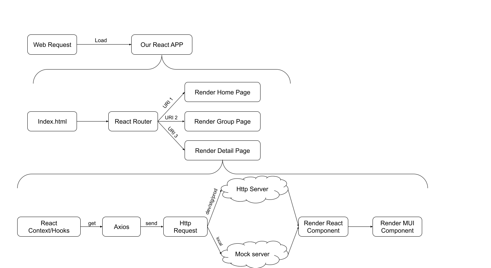

Tech Structure Of XXX

React
A JavaScript library for building user interfaces

React Scripts
It's simply to create single-page React App.
$ npx create-react-app my-app
$ cd my-app
$ npm start
// if want create a typescript app, following the code
$ npx create-react-app my-app --template typescript
Component
Components let you split the UI into independent, reusable pieces
function Welcome(props) {
return Hello, {props.name}
;
}
Hooks
Global Context, Packaged Side Effects
function Example() {
// Add some State
// Init && Destroy Something
// Watch Something
return (
You clicked 0 times
);
}
return (
You clicked {count} times
);
}
Hooks
Global Context, Packaged Side Effects
function Example() {
// Add some State
const [count, setCount] = useState(0);
// Init && Destroy Something
// Watch Something
return (
You clicked {count} times
);
}
Hooks
Global Context, Packaged Side Effects
function Example() {
// Add some State
const [count, setCount] = useState(0);
// Init && Destroy Something
useEffect(() => {
Websocket.open();
return ()=> Websocket.close();
},);
// Watch Something
return (
You clicked {count} times
);
}
Hooks
Global Context, Packaged Side Effects
function Example() {
// Add some State
const [count, setCount] = useState(0);
// Init && Destroy Something
useEffect(() => {
Websocket.open();
return ()=> Websocket.close();
},);
// Watch Something
useEffect(() => {
document.title = `You clicked ${count} times`;
},[count]);
return (
You clicked {count} times
);
}
Router
a fully-featured client routing library for React

Mui
MUI provides a fast way to develop React applications

Mui Install
Follow the documents at their website
$ npm install @mui/material @emotion/react @emotion/styled
Mui Component
Mui Style
Axios
Promise based HTTP client for the browser and node.js

Axios Install
$ npm install axios
Usuage
import axios from "axios";
function someMethod(){
// ....
const instance = axios.create({
baseURL: 'https://some-domain.com/api/',
timeout: 1000,
headers: {'X-Custom-Header': 'foobar'}
});
instance.get('/data')
.then(res => {
// get the response and do anything you want
// ....
})
}
miragejs
Build complete frontend features,
even if your API doesn't exist

MirageJs Install
$ npm install --save-dev miragejs
MirageJs Usage
import { createServer } from "miragejs"
export default function () {
createServer({
routes() {
this.get("/data", () => ({
reminders: [],
}))
},
})
}
Test
Not only the logic, but also the UI
Jest && Testing Library

Install
// install Jest
$ npm install --save-dev jest
// install testing-library
$ npm install --save-dev @testing-library/react
Jest Usage
// some business code
export function sum(a, b) {
return a + b;
}
// test with jest
import sum form 'SomeBusinessModule'
it('adds 1 + 2 to equal 3', () => {
expect(sum(1, 2)).toBe(3);
});
Testing Library Usage
Eslint
Find and fix problems in your JavaScript code
Already provided by React Script

Change the eslint config file
// you'll have a .eslintrc.{js,yml,json} file in your project.
// In it, you'll see some rules configured like this
// The names "semi" and "quotes" are the names of rules in ESLint.
// The first value is the error level of the rule and can be one of these values:
{
"rules": {
"semi": ["error", "always"],
"quotes": ["error", "double"]
}
}
Once some errors find by Eslint's static analyze

Husky
Make easy to add git hook

Install
# Install
$ npm install husky -D
# Edit package.json > prepare script and run it once:
$ npm set-script prepare "husky install"
$ npm run prepare
# Add a hook:
$ npx husky add .husky/pre-commit "npm test"
$ git add .husky/pre-commit
# Make a commit:
git commit -m "Keep calm and commit"
# `npm test` will run every time you commit\
What happened when we request a url
The Real Code
Mix all the things